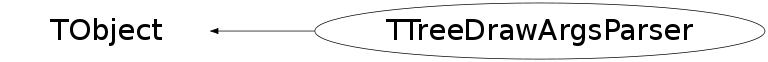

Function Members (Methods)
public:
| TTreeDrawArgsParser() | |
| TTreeDrawArgsParser(const TTreeDrawArgsParser&) | |
| virtual | ~TTreeDrawArgsParser() |
| void | TObject::AbstractMethod(const char* method) const |
| virtual void | TObject::AppendPad(Option_t* option = "") |
| virtual void | TObject::Browse(TBrowser* b) |
| static TClass* | Class() |
| virtual const char* | TObject::ClassName() const |
| virtual void | TObject::Clear(Option_t* = "") |
| virtual TObject* | TObject::Clone(const char* newname = "") const |
| virtual Int_t | TObject::Compare(const TObject* obj) const |
| virtual void | TObject::Copy(TObject& object) const |
| virtual void | TObject::Delete(Option_t* option = "")MENU |
| virtual Int_t | TObject::DistancetoPrimitive(Int_t px, Int_t py) |
| virtual void | TObject::Draw(Option_t* option = "") |
| virtual void | TObject::DrawClass() constMENU |
| virtual TObject* | TObject::DrawClone(Option_t* option = "") constMENU |
| virtual void | TObject::Dump() constMENU |
| virtual void | TObject::Error(const char* method, const char* msgfmt) const |
| virtual void | TObject::Execute(const char* method, const char* params, Int_t* error = 0) |
| virtual void | TObject::Execute(TMethod* method, TObjArray* params, Int_t* error = 0) |
| virtual void | TObject::ExecuteEvent(Int_t event, Int_t px, Int_t py) |
| virtual void | TObject::Fatal(const char* method, const char* msgfmt) const |
| virtual TObject* | TObject::FindObject(const char* name) const |
| virtual TObject* | TObject::FindObject(const TObject* obj) const |
| Bool_t | GetAdd() const |
| Int_t | GetDimension() const |
| virtual Option_t* | TObject::GetDrawOption() const |
| static Long_t | TObject::GetDtorOnly() |
| TString | GetExp() const |
| virtual const char* | TObject::GetIconName() const |
| Double_t | GetIfSpecified(Int_t num, Double_t def) const |
| static Int_t | GetMaxDimension() |
| virtual const char* | TObject::GetName() const |
| Int_t | GetNoParameters() const |
| virtual char* | TObject::GetObjectInfo(Int_t px, Int_t py) const |
| TString | GetObjectName() const |
| static Bool_t | TObject::GetObjectStat() |
| TString | GetObjectTitle() const |
| virtual Option_t* | TObject::GetOption() const |
| Bool_t | GetOptionSame() const |
| TObject* | GetOriginal() const |
| Double_t | GetParameter(int num) const |
| TString | GetProofSelectorName() const |
| TString | GetSelection() const |
| Bool_t | GetShouldDraw() const |
| virtual const char* | TObject::GetTitle() const |
| virtual UInt_t | TObject::GetUniqueID() const |
| TString | GetVarExp() const |
| TString | GetVarExp(Int_t num) const |
| virtual Bool_t | TObject::HandleTimer(TTimer* timer) |
| virtual ULong_t | TObject::Hash() const |
| virtual void | TObject::Info(const char* method, const char* msgfmt) const |
| virtual Bool_t | TObject::InheritsFrom(const char* classname) const |
| virtual Bool_t | TObject::InheritsFrom(const TClass* cl) const |
| virtual void | TObject::Inspect() constMENU |
| void | TObject::InvertBit(UInt_t f) |
| virtual TClass* | IsA() const |
| virtual Bool_t | TObject::IsEqual(const TObject* obj) const |
| virtual Bool_t | TObject::IsFolder() const |
| Bool_t | TObject::IsOnHeap() const |
| virtual Bool_t | TObject::IsSortable() const |
| Bool_t | IsSpecified(int num) const |
| Bool_t | TObject::IsZombie() const |
| virtual void | TObject::ls(Option_t* option = "") const |
| void | TObject::MayNotUse(const char* method) const |
| virtual Bool_t | TObject::Notify() |
| void | TObject::Obsolete(const char* method, const char* asOfVers, const char* removedFromVers) const |
| static void | TObject::operator delete(void* ptr) |
| static void | TObject::operator delete(void* ptr, void* vp) |
| static void | TObject::operator delete[](void* ptr) |
| static void | TObject::operator delete[](void* ptr, void* vp) |
| void* | TObject::operator new(size_t sz) |
| void* | TObject::operator new(size_t sz, void* vp) |
| void* | TObject::operator new[](size_t sz) |
| void* | TObject::operator new[](size_t sz, void* vp) |
| TTreeDrawArgsParser& | operator=(const TTreeDrawArgsParser&) |
| virtual void | TObject::Paint(Option_t* option = "") |
| Bool_t | Parse(const char* varexp, const char* selection, Option_t* option) |
| virtual void | TObject::Pop() |
| virtual void | TObject::Print(Option_t* option = "") const |
| virtual Int_t | TObject::Read(const char* name) |
| virtual void | TObject::RecursiveRemove(TObject* obj) |
| void | TObject::ResetBit(UInt_t f) |
| virtual void | TObject::SaveAs(const char* filename = "", Option_t* option = "") constMENU |
| virtual void | TObject::SavePrimitive(ostream& out, Option_t* option = "") |
| void | TObject::SetBit(UInt_t f) |
| void | TObject::SetBit(UInt_t f, Bool_t set) |
| virtual void | TObject::SetDrawOption(Option_t* option = "")MENU |
| static void | TObject::SetDtorOnly(void* obj) |
| void | SetObjectName(const char* s) |
| static void | TObject::SetObjectStat(Bool_t stat) |
| void | SetOriginal(TObject* o) |
| virtual void | TObject::SetUniqueID(UInt_t uid) |
| virtual void | ShowMembers(TMemberInspector& insp) |
| virtual void | Streamer(TBuffer& b) |
| void | StreamerNVirtual(TBuffer& b) |
| virtual void | TObject::SysError(const char* method, const char* msgfmt) const |
| Bool_t | TObject::TestBit(UInt_t f) const |
| Int_t | TObject::TestBits(UInt_t f) const |
| virtual void | TObject::UseCurrentStyle() |
| virtual void | TObject::Warning(const char* method, const char* msgfmt) const |
| virtual Int_t | TObject::Write(const char* name = 0, Int_t option = 0, Int_t bufsize = 0) |
| virtual Int_t | TObject::Write(const char* name = 0, Int_t option = 0, Int_t bufsize = 0) const |
protected:
| void | ClearPrevious() |
| TTreeDrawArgsParser::EOutputType | DefineType() |
| virtual void | TObject::DoError(int level, const char* location, const char* fmt, va_list va) const |
| void | TObject::MakeZombie() |
| Bool_t | ParseName(TString name) |
| Bool_t | ParseOption() |
| Bool_t | ParseVarExp() |
| Bool_t | SplitVariables(TString variables) |
Data Members
public:
| enum EOutputType { | kUNKNOWN | |
| kEVENTLIST | ||
| kENTRYLIST | ||
| kPROFILE | ||
| kPROFILE2D | ||
| kGRAPH | ||
| kPOLYMARKER3D | ||
| kHISTOGRAM1D | ||
| kHISTOGRAM2D | ||
| kLISTOFGRAPHS | ||
| kLISTOFPOLYMARKERS3D | ||
| }; | ||
| enum TObject::EStatusBits { | kCanDelete | |
| kMustCleanup | ||
| kObjInCanvas | ||
| kIsReferenced | ||
| kHasUUID | ||
| kCannotPick | ||
| kNoContextMenu | ||
| kInvalidObject | ||
| }; | ||
| enum TObject::[unnamed] { | kIsOnHeap | |
| kNotDeleted | ||
| kZombie | ||
| kBitMask | ||
| kSingleKey | ||
| kOverwrite | ||
| kWriteDelete | ||
| }; |
protected:
| Bool_t | fAdd | values should be added to an existing object |
| Int_t | fDimension | dimension of the histogram/plot |
| Bool_t | fDrawProfile | true if the options contain :"prof" |
| Bool_t | fEntryList | if fill a TEntryList |
| TString | fExp | complete variable expression |
| TString | fName | histogram's/plot's name |
| Int_t | fNoParameters | if dimensions of the plot was specified |
| TString | fOption | draw options |
| Bool_t | fOptionSame | if option contained "same" |
| TObject* | fOriginal | original plot (if it is to be reused) |
| TTreeDrawArgsParser::EOutputType | fOutputType | type of the output |
| Bool_t | fParameterGiven[9] | true if the parameter was given, otherwise false |
| Double_t | fParameters[9] | parameters in brackets |
| TString | fSelection | selection expression |
| Bool_t | fShouldDraw | if to draw the plot |
| TString | fVarExp[4] | variable expression 0 - X, 1 - Y, 2 - Z, 3 - W |
Class Charts
{kind=link}
{kind=link}
{kind=link}
{kind=link}

Function documentation
Bool_t SplitVariables(TString variables)
Parse expression [var1 [:var2 [:var3] ...]], number of variables cannot be greater than fgMaxDimension. A colon which is followed by (or that follows) another semicolon is not regarded as a separator. If there are more separating : than fgMaxDimension - 1 then all characters after (fgMaxDimension - 1)th colon is put into the last variable. fDimension := <number of variables> fVarExp[0] := <first variable string> fVarExp[1] := <second variable string> .. Returns kFALSE in case of an error.
Bool_t ParseName(TString name)
Syntax: [' '*][[\+][' '*]name[(num1 [, [num2] ] [, [num3] ] ...)]] num's are floating point numbers sets the fileds fNoParameters, fParameterGiven, fParameters, fAdd, fName to apropriate values. Returns kFALSE in case of an error.
Bool_t ParseOption()
Check if options contain some data important for choosing the type of the drawn object.
TString GetProofSelectorName() const
Double_t GetParameter(int num) const
returns *num*-th parameter from brackets in the expression in case of an error (wrong number) returns 0.0 num - number of parameter (counted from 0)
Double_t GetIfSpecified(Int_t num, Double_t def) const
num - parameter number def - default value of the parameter returns the value of *num*-th parameter from the brackets in the variable expression if the parameter of that number wasn't specified returns *def*.
Bool_t IsSpecified(int num) const
TString GetVarExp(Int_t num) const
Returns the *num*-th variable string in case of an error prints an error message and returns an empty string.
TTreeDrawArgsParser::EOutputType DefineType()